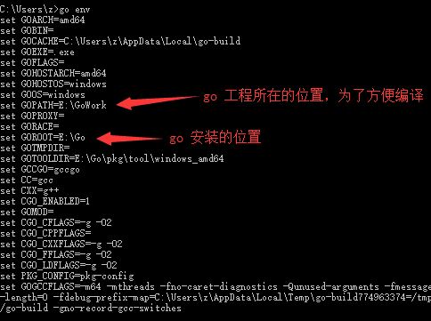

引言
虽然之前了解过Go，但鉴于各种原因并没有入坑Go（虽然这次之后也不见得就入了坑）。由于某知名互联网公司发布了一个Go的开源项目，趁此机会也跟风拜读了下大公司的开源代码。由于我习惯使用VSCode所以就在VSCode的基础上搭建了Go的开发环境。由于我使用的是Windows10，所以就以Windows10作为平台，介绍环境的搭建。
安装Go
进入官网https://golang.google.cn/下载对应版本的安装文件，然后安装。安装十分简单，安装的时候你可以选择自定义安装位置。安装完后打开cmd，输入go env查看go的配置，由于项目编译会产生大量文件，占用空间，而Go安装默认在C盘。所以我们最好把编译位置修改到其他地方。

打开环境变量，可以在上面的用户变量中看到$GOPATH，打开编辑会看到变量是%USERPROFILE%\go,**%USERPROFILE%**是用户目录，我们可以删除本条，并在系统变量中添加$GOPATH到自定义目录；或者直接在用户变量把$GOPATH修改为自定义目录。
VSCode安装Go插件
在VSCode中ctrl+shift+x，输入go安装第一个插件即可新建一个.go文件输入package时右下角会自动提示安装go的扩展。如果选择install all由于国内网络原因，一般情况下会有几个扩展安装失败，有两种方法解决。
1.使用代理
首先你需要拥有可以挂代理的方法，具体怎么做我不作细说。由于命令行不能直接利用电脑使用的代理，所以需要在VSCode中添加一条配置。键入ctrl+,点击在setting.json中编辑，然后添加"http.proxy": "https://127.0.0.1:1080",即可，一般情况下打开代理后本地使用的代理端口为1080，如果本地的代理端口为其他，那只要换对应端口就行了。这里的配置的意思是使用的本地的代理端口，所以127.0.0.1或者localhost都是可以的。然后就可以顺利安装说有扩展了。
2.手动下载安装
在说如何手动下载安装前，先说明下两点。一点是因为需要用git来下载包，所以需要安装git，如何安装在此不作说明。或者可以直接在github上手动下载。其次，VSCode上的官方插件其实并没有实际去做诸如智能提示，调试，编译的功能，而是调用扩展来实现以上功能，也就是说如果选择install all的话会把大约11个扩展安装上如果不想这样，可以选择性安装需要的扩展。
1 | gocode |
理论上插件做了两步行为，先是把扩展的项目下载到$GOPATH的目录下，然后执行go install tools编译后生成一个exe文件存放在$GOPATH/bin下，之后只要调用对应文件就实现了之前所说的功能。所以我们只要把项目下来，然后执行go install tools即可。
首先按照插件的提示install all，一段时间后之后会看到类似的提示
1 | Installing github.com/mdempsky/gocode FAILED |
我们需要在$GOPATH的目录根据以下目录补全文件夹
1 | src |
注意：一般来讲上面安装失败的情况是由于golang.org无法访问的导致的，虽然github上的扩展安装失败，但如果打开
$GOPATH/src/github.com里面的文件应该是全的，如果不全，就按下面步骤下载github上的项目，正常可以直接考虑golang的问题。
然后根据失败信息上的链接把项目用git克隆下来，或者直接到对应页面下载下来。如果github上的扩展不全，先把github上的项目下载下来。
由于国内网络原因，golang上的项目不能直接访问golang.org下载，所以我们要在github上下载扩展。
注意：github上的项目需要放在src/github.com下面golang的项目需要放在src/golang.org/x下面
进入src/golang.org/x然后克隆项目$ git clone git@github.com:golang/tools.git,然后golang.org/x/tools/cmd/guru和golang.org/x/tools/cmd/gorename都下载下来了，接着再克隆git clone https://github.com/golang/lint.git，golang.org/x/lint/golint也就下载下来了。
最后只要打开vscode,在原来的地方输入点东西，右下角提示出来，点击install all等待编译，就能成功安装了。